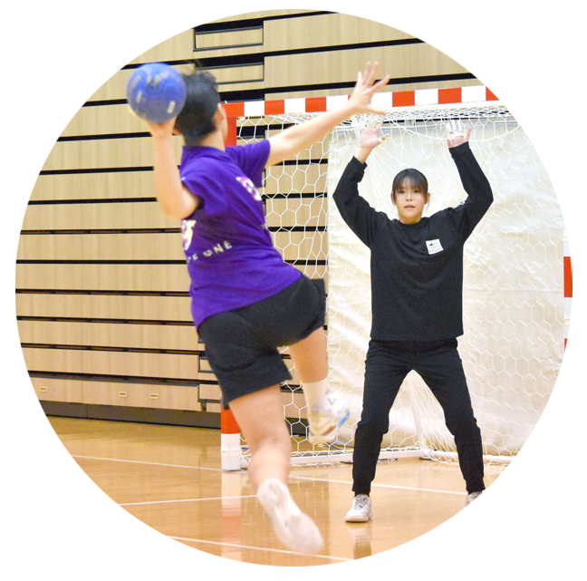

New Graduate & Mid career Recruitment新卒・中途採用（ハンドボール）
医療法人社団やまびこは、女子ハンドボールクラブチーム「横浜メルズ」を発足いたしました。
仕事と両立させながらハンドボールを続けたいメンバーを募集中です。
医療事務またはトレーナーとして働きながら練習を重ね、ジャパンオープン優勝を目指して試合に挑戦できる環境を整えています。
医療事務やトレーナー業務が未経験の方も安心して始められる充実した教育体制と、長く働けるバックアップ体制があります。
選手引退後も、やまびこグループで正社員としてセカンドキャリアを積むことができる安心の環境です。
ハンドボールと仕事の両立を全力でサポートします。

| 業務内容 |
|
|---|---|
| 求める人物像 |
|
| 勤務地 |
|
| 給与 | 【正社員】月給230,000円 ※上記は新卒初任給の一例です。既卒の方は、経験・能力等を考慮のうえ決定します。 |
| 福利厚生 |
|
| お問い合わせ | 横浜メルズに関する質問や施設見学のご希望は、横浜メルズお問い合わせフォームへご連絡ください。 InstagramのDMまたはお電話（080-4356-3887）でご連絡いただくことも可能です。 |
| 採用エントリー方法 | エントリーフォームからご応募ください。 メール（info@yamabiko-group.or.jp）または郵送で履歴書をお送りいただくことも可能です。 《郵送先》 〒222-0033 神奈川県横浜市港北区新横浜3-6-5 新横浜第一生命ビル2階 医療法人社団やまびこ 総務課人事宛 |
あなたも、地域医療を支える仲間に。
やまびこグループでは、地域医療を支える仲間を募集しています。
見学や説明会の参加も歓迎しておりますので、お気軽にエントリーください。